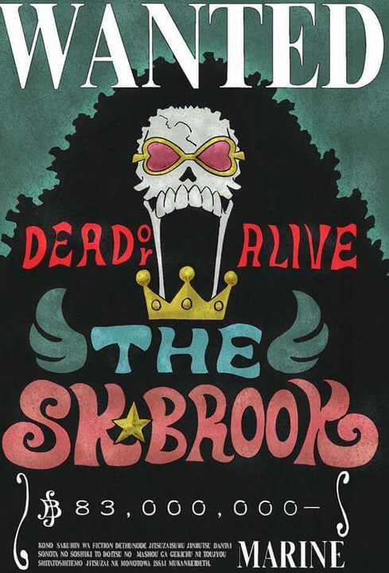

Los Piratas de Sombrero de Paja (麦わらの海賊団 Mugiwara no Kaizoku-dan), principalmente conocidos como la Banda de Sombrero de Paja (麦わらの一味 Mugiwara no Ichimi?), es una banda de piratas originaria del East Blue, pero tiene miembros de diferentes partes del mundo. Ellos son el foco y los principales protagonistas de la trama del manga y el anime de One Piece, siendo capitaneados por el protagonista principal de la serie Monkey D Luffy.
Entre sus objetivos estan:
- Encontrar el one piece, tesoro el cual dejo olvidado el pirata Gol D Roger
- Ser el rey de los piratas
En este momento Monkey D Luffy lleva mas de la mitad de su viaje y cuenta con 10 compañeros que lo acompañan en todas sus locuras, enumeramos para saber quienes son hasta el momento:


